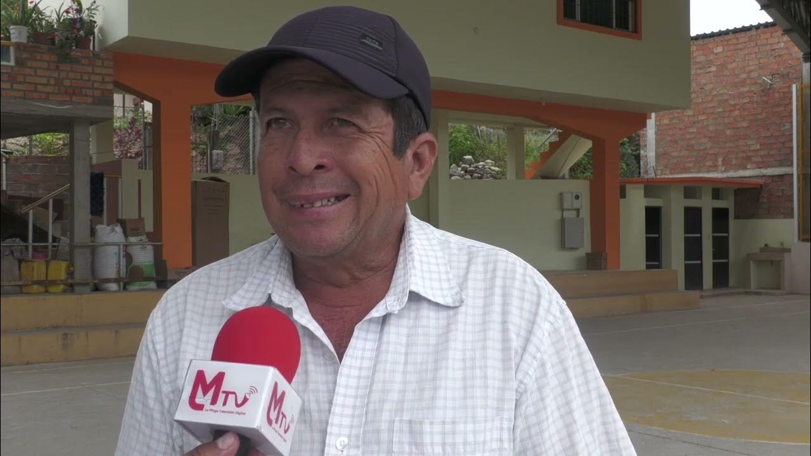
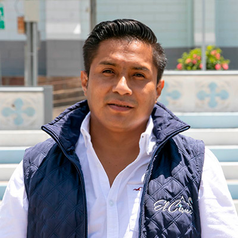
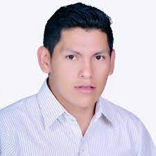
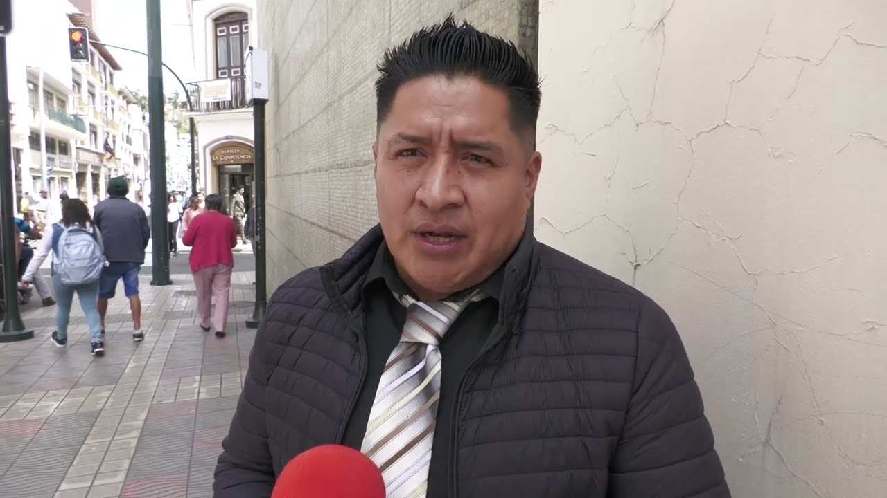
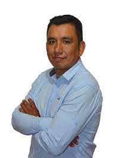
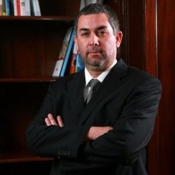
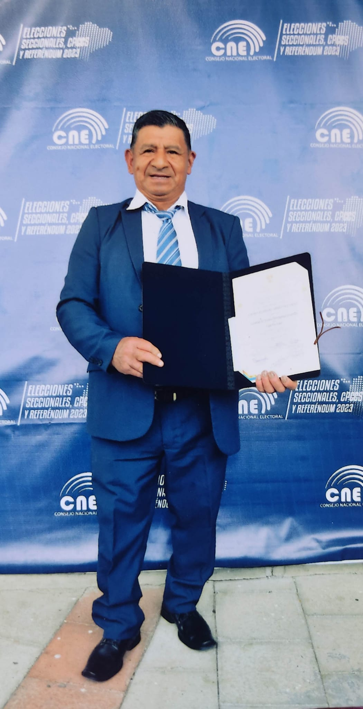
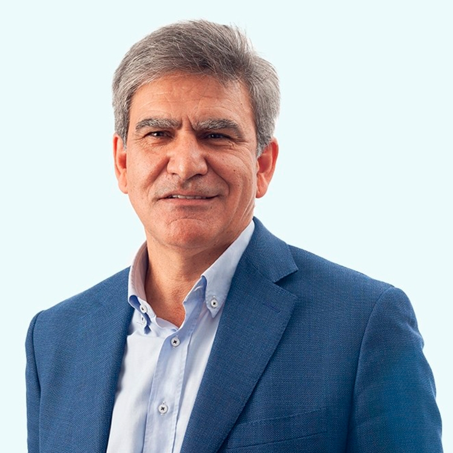
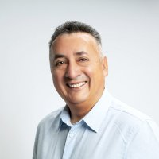

CONFERENCIA DE LOS 13 PRESIDENTES DE LAS PARROQUIAS RURALES DE LA CUIDAD DE LOJA
Propuestas planificadas de las obras que se realizaran en la ciudad de Loja
Oradores
Alcalde de la provincia y cantón de Loja
Franco Quezada
Franco Antonio Quezada Montesinos, de 53 años de edad, es el nuevo alcalde de Loja. Ganó las elecciones seccionales el pasado 5 de febrero de 2023, de entre 15 candidatos postulantes, quienes participaron en los comicios, algunos de larga trayectoria política. Aseguró que durante su administración no se aprovechará del poder, ni de la institución, su principal carta de presentación será la honestidad, el trabajo, las obras y la austeridad
El alcalde de Loja, Franco Quezada Montesinos, oriundo de Celica, recibió un homenaje de reconocimiento por parte de las autoridades cantonales celicanas por alcanzar la representatividad política de Loja. El evento se realizó en el marco de la décimo séptima edición de la Expoferia Ganadera, Agrícola y Empresarial San Pedro de Apóstol.
Presidente de la Parroquia Chantaco
Anibal Espinosa
José Anibal Espinosa Pucha, de 55 años de edad, es el nuevo presidente de parroquia Chantaco. Ganó las elecciones seccionales el pasado 5 de febrero de 2023, de entre 4 candidatos postulantes, quienes participaron en las elecciones, algunos de larga trayectoria política. Aseguró que durante su administración no se aprovechará del poder, ni de la institución, su principal carta de presentación será la honestidad, el trabajo, las obras y la austeridad
Presidente de la Parroquia Quinara
Efrén Arajo

Descripción del Orador 2.
Presidente de la Parroquia El Cisne
Edison Carrión

Edison Carrión, de 35 años de edad, es el nuevo presidente de parroquia El Cisne. Ganó las elecciones seccionales el pasado 5 de febrero de 2023, de entre 5 candidatos postulantes, quienes participaron en las elecciones, algunos de larga trayectoria política. Aseguró que durante su administración no se aprovechará del poder, ni de la institución, su principal carta de presentación será la honestidad, el trabajo, las obras y la austeridad.
Presidente de la ParroquiaTaquil
Manuel Robalino

Lic. José Manuel Robalino Orellana, de 30 años de edad, es el nuevo presidente de parroquia Taquil. Ganó las elecciones seccionales el pasado 6 de febrero de 2023, de entre 3 candidatos postulantes, quienes participaron en las elecciones, algunos de larga trayectoria política. Aseguró que durante su administración no se aprovechará del poder, ni de la institución, su principal carta de presentación será la honestidad, el trabajo, las obras y la austeridad
Presidente de la Parroquia Chuquiribamba
Romel Aguinsaca

Romel Aguinsaca, de 30 años de edad, es el nuevo presidente de parroquia Chuquiribamba. Ganó las elecciones seccionales el pasado 5 de febrero de 2023, de entre 4 candidatos postulantes, quienes participaron en las elecciones, algunos de larga trayectoria política. Aseguró que durante su administración no se aprovechará del poder, ni de la institución, su principal carta de presentación será la honestidad, el trabajo, las obras y la austeridad.
Presidente de la Parroquia Vilcabamba
Victor Carpio
Descripción del Orador 2.Lic. Victor Carpio, de 39 años de edad, es el nuevo presidente de parroquia Vilcabamba. Ganó las elecciones seccionales el pasado 5 de febrero de 2023, de entre 3 candidatos postulantes, quienes participaron en las elecciones, algunos de larga trayectoria política. Aseguró que durante su administración no se aprovechará del poder, ni de la institución, su principal carta de presentación será la honestidad, el trabajo, las obras y la austeridad
Presidente de la Parroquia San Pedro de Vilcabamba
Jimmy Toledo
Jimmy ToledoOrellana, de 42 años de edad, es el nuevo presidente de parroquia San Pedro de Vilcabamba. Ganó las elecciones seccionales el pasado 5 de febrero de 2023, de entre 4 candidatos postulantes, quienes participaron en las elecciones, algunos de larga trayectoria política. Aseguró que durante su administración no se aprovechará del poder, ni de la institución, su principal carta de presentación será la honestidad, el trabajo, las obras y la austeridad
Presidente de la Parroquia Malacatos
William Chamba

William ChambaOrellana, de 46 años de edad, es el nuevo presidente de parroquia Malacatos. Ganó las elecciones seccionales el pasado 5 de febrero de 2023, de entre 3 candidatos postulantes, quienes participaron en las elecciones, algunos de larga trayectoria política. Aseguró que durante su administración no se aprovechará del poder, ni de la institución, su principal carta de presentación será la honestidad, el trabajo, las obras y la austeridad
Presidente de la Parroquia San Lucas
Pedro Lozano
Pedro Lozano, de 39 años de edad, es el nuevo presidente de parroquia San Lucas. Ganó las elecciones seccionales el pasado 5 de febrero de 2023, de entre 3 candidatos postulantes, quienes participaron en las elecciones, algunos de larga trayectoria política. Aseguró que durante su administración no se aprovechará del poder, ni de la institución, su principal carta de presentación será la honestidad, el trabajo, las obras y la austeridad
Presidente de la Parroquia Santiago
Iván Quezada

Iván Quezada, de 58 años de edad, es el nuevo presidente de parroquia Santiago. Ganó las elecciones seccionales el pasado 5 de febrero de 2023, de entre 3 candidatos postulantes, quienes participaron en las elecciones, algunos de larga trayectoria política. Aseguró que durante su administración no se aprovechará del poder, ni de la institución, su principal carta de presentación será la honestidad, el trabajo, las obras y la austeridad
Presidente de la Parroquia Jimbilla
Lauro Abrigo

Lauro Abrigo, de 59 años de edad, es el nuevo presidente de parroquia Jimbilla. Ganó las elecciones seccionales el pasado 5 de febrero de 2023, de entre 3 candidatos postulantes, quienes participaron en las elecciones, algunos de larga trayectoria política. Aseguró que durante su administración no se aprovechará del poder, ni de la institución, su principal carta de presentación será la honestidad, el trabajo, las obras y la austeridad
Presidente de la Parroquia Gualel
Rodrigo Jamil Tene

Rodrigo Jamil Tene, de 57 años de edad, es el nuevo presidente de parroquia Gualel. Ganó las elecciones seccionales el pasado 5 de febrero de 2023, de entre 3 candidatos postulantes, quienes participaron en las elecciones, algunos de larga trayectoria política. Aseguró que durante su administración no se aprovechará del poder, ni de la institución, su principal carta de presentación será la honestidad, el trabajo, las obras y la austeridad
Presidente de la Parroquia Yangana
Cosme Ochoa

Cosme Ochoa, de 57 años de edad, es el nuevo presidente de parroquia Yangana. Ganó las elecciones seccionales el pasado 5 de febrero de 2023, de entre 5 candidatos postulantes, quienes participaron en las elecciones, algunos de larga trayectoria política. Aseguró que durante su administración no se aprovechará del poder, ni de la institución, su principal carta de presentación será la honestidad, el trabajo, las obras y la austeridad
Programa
08:00 - Asfaltado de la via Chantaco, Chuquiribamaba y Taquil - Orador Alcalde de la provincia y cantón de Loja Franco Quezada
09:00 - Construcción de las Escalinatas El paraíso- Orador Presidente de la Parroquia Chantaco Anibal Espinosa
09:30 - Proyecto de agua potable Sahuayco - Orador Presidente de la Parroquia Quinara Efrén Arajo
10:00 - Centro comercial el Cisne - Orador Presidente de la Parroquia El Cisne Edison Carrión
10:30 - Sistema de acantarillado- Orador Presidente de la Parroquia Taquil Manuel Robalino
11:00 - Adoquinamiento de la parroquia - Orador Presidente de la Parroquia Chuquiribamba
11:30 - Sistema de acantarillado en beneficio de Tumianuma - Orador Presidente de la Parroquia Vilcabamba Victor Carpio
12:00 - Acantarillado plivial - Orador Presidente de la Parroquia San Pedro de Vilcabamba Jimmy Toledo
12:30 - Construción Sanitarios Básicos - Orador Presidente de la Parroquia Malacatos William Chamba
14:00 - Remodelan fachadade la iglesia y parque central - Orador Presidente de la Parroquia San lucas William Chamba
14:30 - Adoquinamineto de las calles - Orador Presidente de la Parroquia Santiago Iván Quezada
15:00 - Construción del parque de recreaciones - Orador Presidente de la Parroquia Jimbilla Lauro Abrigo
15:30 - Adoquinamiento de las calles - Orador Presidente de la Parroquia Gualel Rodrigo Jamil Tene
16:00 - Acantarillado Pluvial - Orador Presidente de la Parroquia Yangana Cosme Ochoa